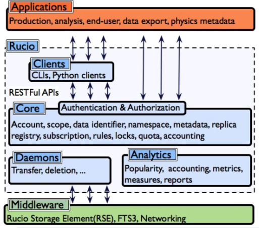

Architecture¶
The Rucio system is based on a distributed architecture and can be decomposed into four main components: Server, Daemons, Resources, and User Interface.
The Rucio server is a passive component listening to incoming queries. It connects several Rucio core components together and offers a common interface for external interaction. This abstraction layer is responsible for the interactions with different middleware tools and storage systems. It effectively hides the complexity of these tools and combines them into one interface used by Rucio. The persistence layer keeps all the logical data and the application states.
The Rucio daemons are active components that orchestrate the collaborative work of the whole system. They are for example:
Transfer daemon (Conveyor) - in charge of File transfers
File deletion (Reaper)
Data Expiration (Undertaker)
Data placement policies/Subscriptions (Transmogrifier)
Replication Rule Engine (Judge)
Messaging (Hermes)
Consistency (Auditor)
Data Rebalancing